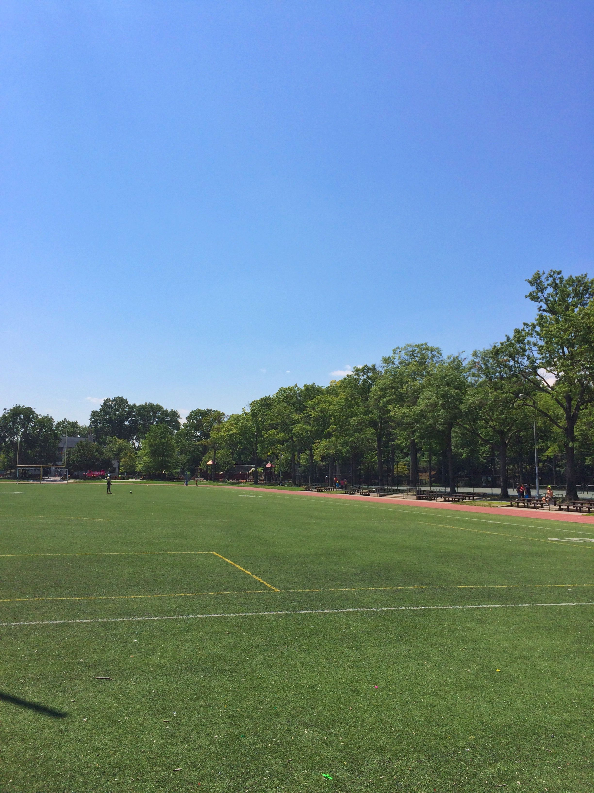
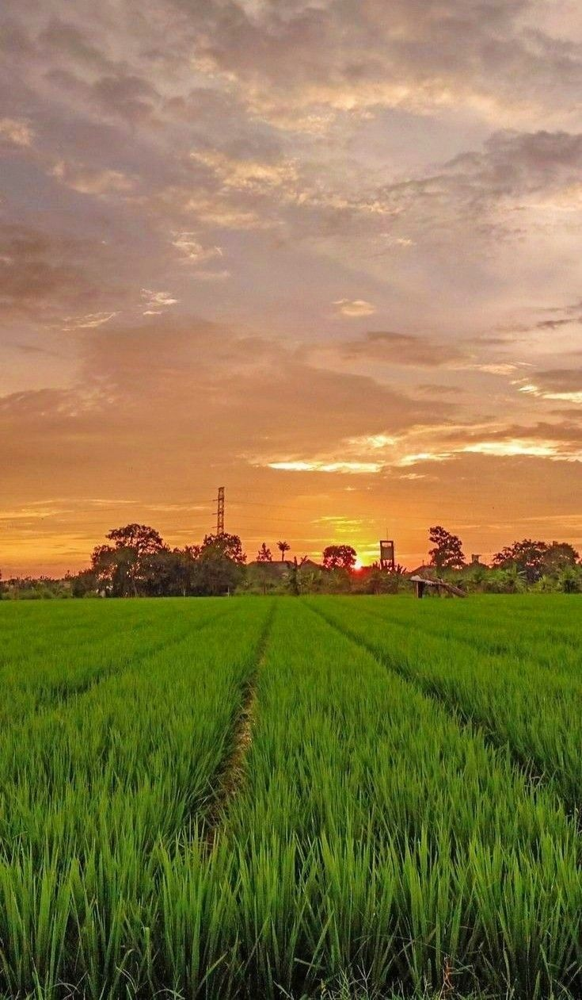
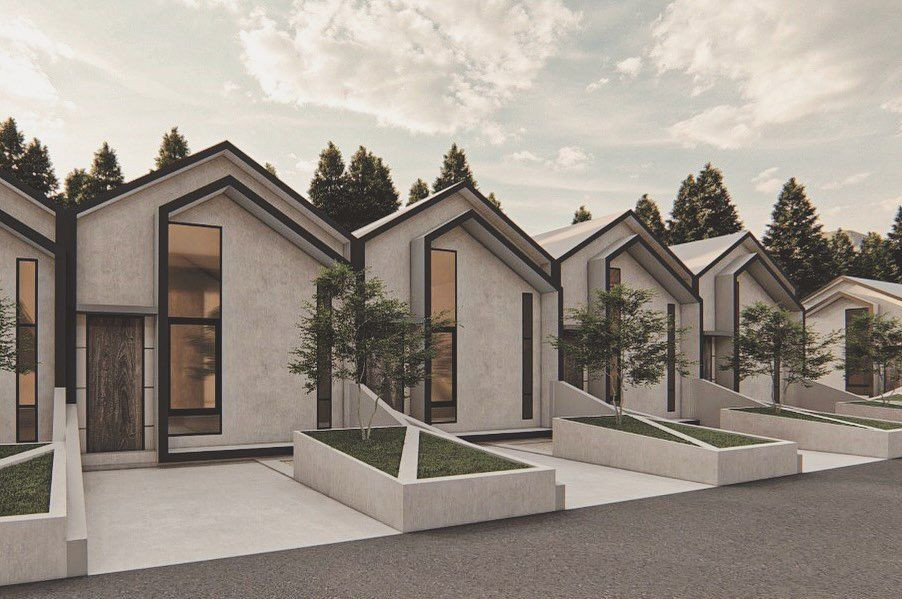

Desa Kotasan
By Amella Putri
ABOUT
Desa atau perdesaan adalah suatu perwujudan atau kesatuan geografi,sosial, ekonomi, politik, dan kultural yang terdapat di suatu daerah dalam hubungan dan pengaruhnya secara timbal balik dengan daerah lain.pengertian desa sebagai kesatuan masyarakat hukum yang memiliki batas wilayah, yang berwenang untuk mengatur dan mengurus kepentingan masyarakat setempat, berdasarkan asal usul dan adat istiadat setempat yang diakui dan dihormati dalam system pemerintahan segara kesatuan Republik Indonesia. Kotasan merupakan salah satu desa yang ada di kecamatan Galang, Kabupaten Deli Serdang, provinsi Sumatra Utara, Indonesia.
Masyarakat desa Kotasan rata-rata memiliki mata pencaharian sebagai petani. Sebagian lainnya menjadi buruh tani, PNS, peternak, selain itu beberapa masyarakat mengembangkan usaha seperti warung dan usaha jasa keterampilan dari tukang kayu,tukang jahit/border, tukang cukur, tukang service elektronik, dan tukang pijat/urut/pengobatan. Dilihat dari mata pencaharian masyarakat desa Kotasan sebagai petani, maka dari itu penghasilan utama dari desa adalah pertanian yang berupa padi sawah, semangka, melon, dan mangga.

Beberapa Dusun yang ada di Desa Kotasan

Dusun 5
Desa kotasan memiliki lapanggan sepak bola yang terletak di dusun 5 dan juga bersebelahan dengan mesjid nurul iman.
Selengkapnya
Dusun 4
Desa Kotasan memiliki persawahan yang cukup Luas yang terletak didusun 4.
Selengkapnya
Dusun 2
Desa Kotasan memiliki Perumahan yang terletak didusun 2 yang bernama Kotasan Asri.
Selengkapnya
Berita Terbaru

Amella Putri
Mahasiswa ITBI
Website Desa Kotasan
by Amella PutriHome | About Us | Contact Us | Login